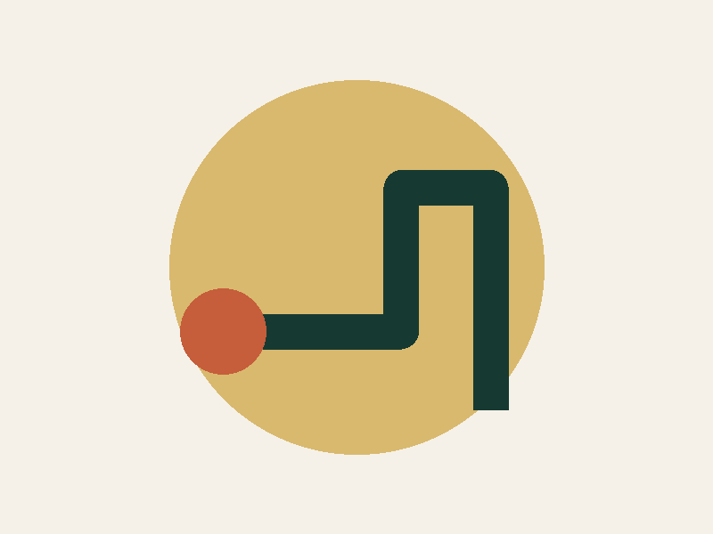
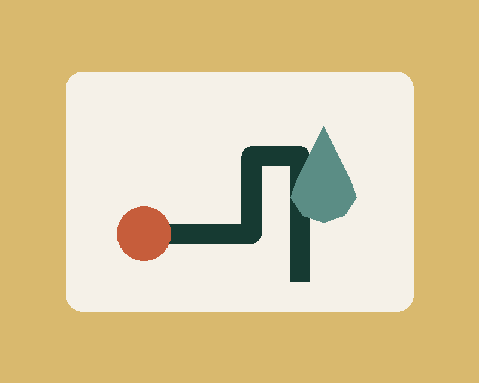

Urgent repair questions
State what is leaking or not working, the affected room, and whether you have safely stopped the water.
Services
Use this page to identify the closest category. Final scope, availability, and price require direct confirmation.

Useful details make the first review clearer. Never touch exposed wiring, hot surfaces, contaminated water, or any unsafe area to collect information.
State what is leaking or not working, the affected room, and whether you have safely stopped the water.
Name the affected sink, tub, shower, or floor drain and note whether one or several drains are slow.
Share the unit type, visible label details, water temperature issue, noise, or safe-to-observe leakage.

Before a visit
Move personal items only when it is safe. Keep children and pets away from the affected space. Do not take apart plumbing or appliances to prepare for service.
Send a requestDescribe what you see. The request can be reviewed before the service type is confirmed.